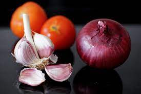

Sinigang na Baboy
Sinigang na baboy, or pork in tamarind stew, is a heart-warming dish
that is common food in every Filipino household during the cold weather,
or even throughout the year.
Ingredients:
- 1 Kg Pork Liempo
- 100 grams Ripe Tomato
- 2 pcs. Shallots
- 5 pcs. Cloves of Garlic

- 300 grams Ripe Tamarind (Sampaloc)
- 200 grams Taro (Gabi)
- 200 grams Lady Finger (Okra)
- 2 bundles of Swamp Cabbage (Kangkong)
- 1 Liter of water
- 2 tbsp. of salt and pepper
Steps:
- Wash the pork and all the vegetable ingredients.
- In a pot, boil water with the tamarind until soft.
- In another pot, boil the pork for 1 hour until soft
- Peel the Taro and slice it and put in the pork broth.
- Squeeze the juice out of the boiled tamarind and strain it to the pork broth.
- Add the sliced Lady Fingers.
- Add salt and pepper to taste.
- Once the pork is tender and taste is right, you can add the Swamp Cabbage.
- After 3 minutes of boiling, you can turn off the stove and Enjoy!